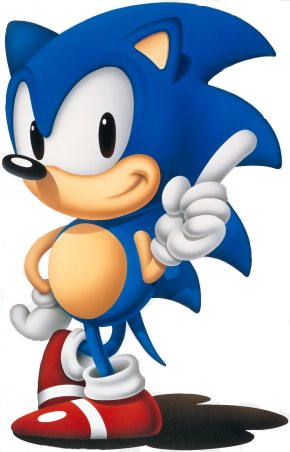
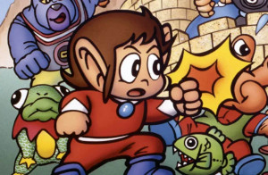
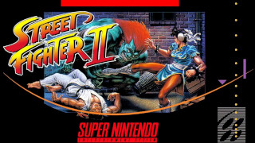

Guerra dos 16 bits
Sega - Mega Drive/ Genesis
Mega Drive define a história da própria Sega. Tudo começou com o domínio da Nintendo com seu forte sucesso Famicom/Nes, o famoso nintendinho 8 bits, vendendo vários milhares de unidades desse console. Poucas eram as indústrias que ousavam peitar a Nintendo, até surgir a SEGA, claro, que era pioneira em jogos de arcade (os fliperamas) e tinha razoável sucesso no mercado.
A SEGA então lançou o seu videogame de 8 bits para concorrer com o NES, o Master System, um sistema tecnicamente superior ao da sua rival. Contudo, obteve relativa derrota para o mesmo. Isto porque o Master se saiu super bem na Europa e no Brasil. A SEGA precisava de uma resposta para contra-atacar e ao mesmo tempo atender ao mercado. Foi assim que nasceu o primeiro videogame de 16 Bits da história. Dentro da SEGA o console era conhecido como “MK-1601“, mas o chefão Hayao Nakayama, resolveu batizá-lo de “Mega Drive“, que representava superioridade “Mega”, e velocidade “Drive”. Que convenhamos, é mais atraente do que o outro nome.
A SEGA aprendeu com o seu Master System e prometeu aos consumidores um console inovador. Dito e feito. Lançado no Japão em 29 de outubro de 1988, o aparelho contava com um visual moderno e preto, com um botão azul , controles anatômicos muito confortáveis, com capacidade gráfica e sonora até proximas aos arcades da época. Equipado com uma placa semelhante aos dos arcades System 16, que a SEGA usava na época, um processador 68000 da Motorola muito poderoso, o mesmo dos micros Amiga e Macintosh, e um co-processador Z-80 responsável para o uso de adaptador para jogos de Master System, com a fantástica velocidade de 7,67 Mhz (muito rápido para a época), foram o suficiente para ganhar a atenção dos gamers. Assim foi simples converter para o uso doméstico os clássicos jogos de arcade para o Mega Drive, como Golden Axe e Shinobi, que mostravam claramente como o sistema podia fazer ótimas conversões.
O Mega Drive não teve uma carreira muito longa no Japão (imagino que pela falta de RPG’s), entretanto a história em outros países era diferente, o console dominava o mercado americano e europeu, onde a SEGA sempre foi forte, e inclusive no Brasil, lançado pela Tec Toy, com aproximadamente 75% do nosso mercado. Lançado nos EUA e batizado como Genesis (o nome Mega Drive já estava registrado por lá), que significa “renascimento” ou “um novo começo” e com uma grande campanha de marketing. Além disso, excelentes jogos foram lançados (pela própria Sega), e finalmente contaram com o apoio de softhouses de renome, o que não acontecia na época do Master System, como a Konami, a Capcom, Hudson, Namco, entre outras. A estratégia adotada de lançar o Genesis rapidamente no mercado americano resultou em um domínio quase que absoluto do mercado de 16 Bits.
Nintendo - Super Famicon /Super Nintendo/ Super Nes
A NINTENDO, pela primeira vez na sua história, se viu ameaçada. Apesar de ter uma liderança de 90% com o Nes, estava perdendo terreno para o novo mercado de 16 Bits que a SEGA iniciou. A Nintendo precisava de um sucessor para o seu aclamado console de 8 Bits e assim enfrentar a nova ameaça .
Masayuki Uemura, o mesmo homem por trás do desenvolvimento do Famicom (nintendinho) anos atrás, foi chamado para encabeçar a equipe que deveria desenvolver o console da próxima geração. E, assim, no final de 1990, seria lançado no Japão o Super Famicom, que logo se tornou um sucesso. O aparelho, por ser quase dois anos mais novo que o concorrente, possuía gráficos e efeitos de áudio bem mais sofisticados que o do rival. Com até 256 cores apresentadas simultaneamente na tela, de uma paleta de mais de 32 mil tons; o video game movimentava sprites com efeitos de rotação, zoom e transparência. Além disso, o seu controle, apesar de não ser tão anatômico como o do Mega Drive, tinha 8 botões.
A placa de som também era poderosa, provavelmente a maior diferença entre o Super Famicom e o Mega Drive. Durante o desenvolvimento do console, a NINTENDO queria um chip de som muito superior a do Mega Drive, um sintetizador-FM da Yamaha, considerado bem avançado até então (era muito superior ao do Nes 8 bits). Para combater as limitações da concorrente, a NINTENDO teve que terceirizar os serviços, pois o trabalho estava além das suas habilidades. Para isso, a empresa contactou a Sony para produzir o chip de audio para o Super Famicom, porém a Sony naquela época não se interessava por videogames e recusou o trabalho. Apenas um dos engenheiros da Sony viu nessa situação uma boa oportunidade. Seu nome era Ken Kutaragi.
Kutaragi começou a trabalhar em segredo com a Nintendo, sem os seus patrões desconfiarem. Assim, foi Kutaragi quem desenvolveu o processador de audio que a Nintendo estava procurando, um Sony SPC700, capaz de fazer trilhas sonoras maravilhosas. Os executivos da Sony, claro, não gostaram do uso não autorizado de seus recursos. O emprego de Kutaragi estava por um fio, quando então a Nintendo ofereceu um lucrativo acordo pelo chip de som, que a Sony logo concordou. Assim, a Sony ganhou muito dinheiro através da Nintendo e Kutaragi provou aos seus patrões que o mercado de videogames podia sim ser muito lucrativo. Esse foi o pontapé inicial para que a Sony entrasse no mercado de videogames.
Mas o poderoso videogame tinha um calcanhar de aquiles: o seu processador era muito lento, que rodava a apenas 3,57 MHz e ocasionava constantes slowdowns em vários jogos. Perdia feio para o Mega Drive, que rodava a 7,67 MHz. Pode parecer pouca coisa, mas isso faria a diferença para o tipo de jogos lançado para cada console. O Super Famicom rodaria os RPGs (o gênero preferido dos japoneses, por isso o grande sucesso no Japão) com maior facilidade, pois são jogos “lentos” que não necessitavam tanto do processador.
O EMBATE:
A Nintendo cometeu um erro estratégico: Demorou a lançar o videogame no mercado americano. Apenas no final de 1991, quase três anos depois do lançamento do Genesis no país, é que o então Super Nintendo Entertainment System chegaria em suas lojas , com um novo visual na cor branca seguindo o padrão do antecessor. Foi inicialmente vendido por US$ 200 e vinha acompanhado do jogo Super Mario World. Na Europa foi lançado algumas semanas depois e aqui na América do Sul somente em 1993 pelo selo “Playtronic”.
A Nintendo ganhava dinheiro com o seu 8 Bits, mas estava custando para embarcar nesse novo mercado. Teve o lançamento do Super Nintendo adiado várias vezes e quando finalmente o fez, não causou grandes abalos nas vendas do Mega Drive, portanto foi no começo dos anos 90 que o Mega Drive conheceu toda a sua glória, superando o seu rival Super Nintendo por uma boa margem, assim a SEGA dava o troco na NINTENDO, apesar do Snes ser tecnicamente superior em relação ao Mega, este contava com jogos bem mais carismáticos para o publico ocidental, variados e em grande quantidade.
Foi então que a SEGA deu seu mais forte golpe na NINTENDO, e na forma de um ouriço azul:
Sonic mascote da Sega desde 1991
Foi com o Sonic The Hedgehoc que a SEGA descartou seu antigo mascote “Alex Kidd” e jogou pesado, colocando o novo e carismático personagem para competir com o Mário. E o ouriço deu um cacete no bigodudo. O Sonic se espalhou pelo mundo com seu jogo de aventura, ajudando a SEGA a continuar a vender seu 16 Bits com uma larga vantagem
. Alex Kidd primeiro mascote da Sega
E a Nintendo teve que engolir um amargo segundo lugar, só que ela não ia deixar barato, nunca deixou de ser forte no oriente e jamais entregaria assim a liderança do mercado americano e europeu. A rivalidade entre as duas empresas cresceu como nunca se viu e as concorrentes continuaram com a mais notória guerra de consoles da história. O embate felizmente ficou realmente nas mãos dos jogos. Tanto uma empresa quanto outra lançavam games cada vez melhores, o que consequentemente dividia a opinião dos gamers sobre cada console e seus exclusivos.
E de tanto tentar, a Nintendo conseguiu dar um (hadouken):
Street Fighter II Super Nintendo
Em 1992 veio a salvação do Super Nintendo graças à Capcom, que lançaria para o console o seu já consagrado game de arcade Street Fighter II, em uma conversão mais do que perfeita para o console da Nintendo.
Finalmente o Super Nintendo começou a decolar no ocidente, pois no Japão ele já dominava o mercado, faltando o resto do mundo. Mas a SEGA que não era boba (na época), estava preparada e contra atacou com excelentes jogos para o Mega Drive, como o Sonic 2 e o Streets of Rage 2, além do próprio Street Fighter 2, que saiu para Mega Drive um bom tempo depois.
A Nintendo ainda tinha que engolir o segundo lugar, mas desta vez estava mais próxima. A SEGA possuía a liderança com 56%, contra 44% da Nintendo. O mercado estava completamente dividido entre as duas empresas e a guerra tinha chegado ao seu ápice. Foi então que surgiu, em 1994, a arma secreta da Nintendo que a colocaria novamente ao topo. Um personagem já esquecido seria ressuscitado e faria que o Super Nintendo assumisse a liderança do mercado dos 16 Bits.
Em 1991 a empresa Rare lança para o nintendinho o game Battletoads, game com sapos guerreiros anabolisados, que rapidamente virou um grande sucesso. O jogo seria relançado para o Super Nintendo em 1993, com o nome de Battletoads in Battlemaniacs. Depois disso a empresa tomou chá de sumiço. Durante esse tempo ela estava investindo em estações gráficas da Silicon Graphic, permitindo a ela a criação de uma nova tecnologia, a ACM (Advanced Computer Modeling). Essa nova tecnologia permitiu o desenvolvimento de gráficos de qualidade incrível para o Super Nintendo. A Big N, impressionada com os resultados, propôs que a Rare escolhesse um personagem da empresa para a criação de um game usando a nova tecnologia. O escolhido foi Donkey Kong.